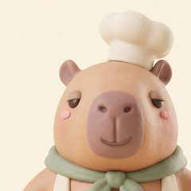
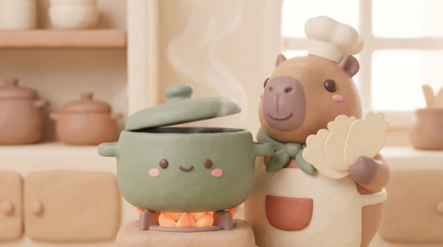

01 挑選食材
合適的入鍋，其他留在這裡。點單字，下方會跳出按鈕。
出餐後會自動帶到
主廚回饋和下一張訂單
02 廚餘回收
只收拼錯的字。
丟錯了？隨時拖回來。

SHARON'S LAB · 學測單字
學測單字地獄廚房
36 ORDERS · FROM WARM-UP TO HELL'S KITCHEN

WORD KITCHEN · 學測單字地獄廚房
CERTIFICATE OF COMPLETION
36 道料理全部出餐。
從小火暖身一路到地獄廚房，每一鍋的字義、詞性與拼字，都經過你的手。
Sharon’s Lab · Word Kitchen
出餐後會自動帶到
主廚回饋和下一張訂單